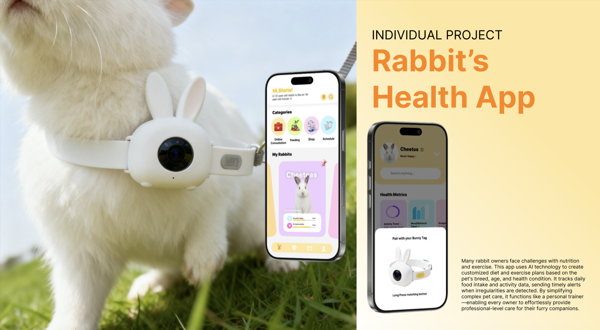
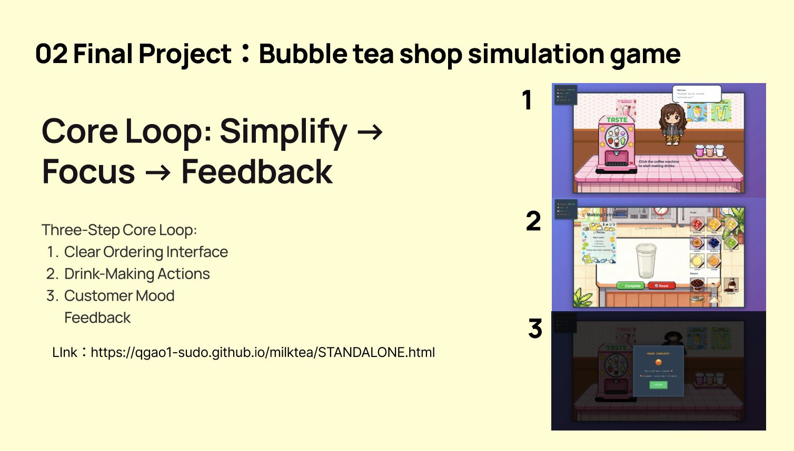

ArtCenter, IXD, 2
“Discovering a Passion for Interaction Design”
Exploring an ArtCenter Interaction Design student’s journey—from choosing the major for career opportunities to discovering passion through hands-on projects and learning diverse design and tech skills.
Interviewed by Selina
What inspired you to choose your major here at ArtCenter?
My dream school has always been ArtCenter. I really like the teaching approach here that encourages students to experiment and try different things on their own. The Interaction Design program at ArtCenter also teaches a wide range of skills. I also love the sunshine in California, so I decided to apply to the Interaction Design major at ArtCenter.
Why did you decide to study at ArtCenter instead of other schools?
Compared with other schools, I believe that at ArtCenter I can learn more knowledge and practical skills. It also gives students the opportunity to explore interaction design across different fields, which I think is very valuable.
How did you first become interested in this field?
At first, I chose Interaction Design because I thought it would be a major with good job opportunities. At that time I didn’t know much about it, but as I continued studying, I started to enjoy the process of taking a project from zero to one and solving real-world problems. That sense of accomplishment gradually made me fall in love with interaction design.
"
The excitement of taking a project from zero to one and solving real-world problems made me fall in love with Interaction Design.
"
Did you consider other majors before choosing this one? Why or why not?
I was also interested in film before, but I never had the chance to study it deeply. If I have the opportunity in the future, I would still like to explore that field.
What aspects of ArtCenter attracted you the most when you applied?
What attracted me the most is that the program allows students to learn a wide and diverse set of skills. For example, interaction design students also study visual communication, sketching, and other related courses. There are also many studio classes and exchange opportunities.Right now, I’m busy with my graduation exhibition. I also took an AI class, and we’re planning to make an AI agent—possibly related to robotaxi or autonomous vehicles—but the concept isn’t finalized yet. Besides that, most of my focus is on the graduation exhibition.
How does studying this major here align with your future goals?
As a Term 2 beginner in Interaction Design, I still don’t have a very clear direction for my future career. However, the program allows me to learn many broad skills, not limited to UI/UX. I believe that by the time I graduate, I will have found the area of interaction design that interests me the most.
"
By learning diverse skills across design and technology, I hope to find the area of Interaction Design that interests me the most.
"
Was there a specific moment or experience that confirmed this was the right major for you?
When I completed a project and saw how it could solve a real problem, I felt a strong sense of satisfaction. The excitement I experienced during the design process made me realize that this major really suits me.
What do you enjoy most about your program so far?
What I enjoy most is having the opportunity to use my own methods to solve problems through design.
How do you feel ArtCenter supports your learning and growth in this field?
The school provides very rich teaching resources and many opportunities for us to explore different areas of interaction design.


If you could give advice to someone thinking about this major, what would it be?
My advice would be to learn different AI tools and try to integrate AI into your design process.
The End